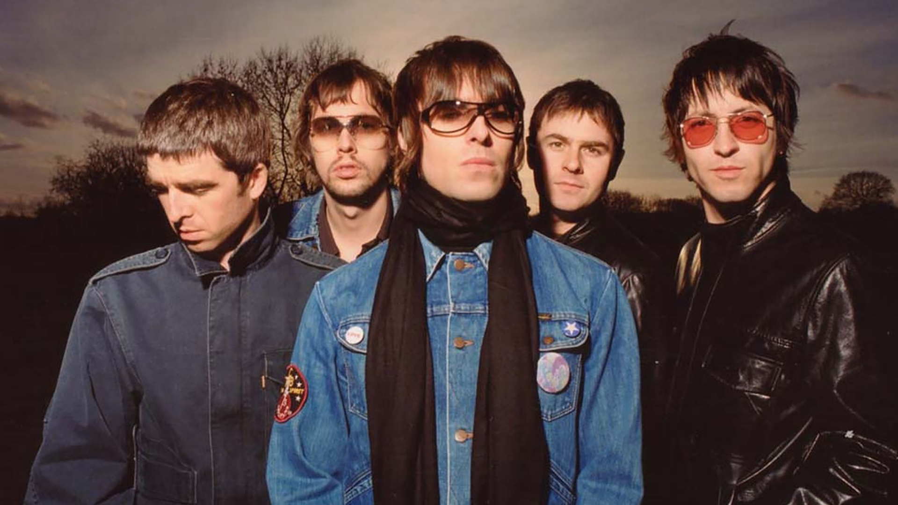
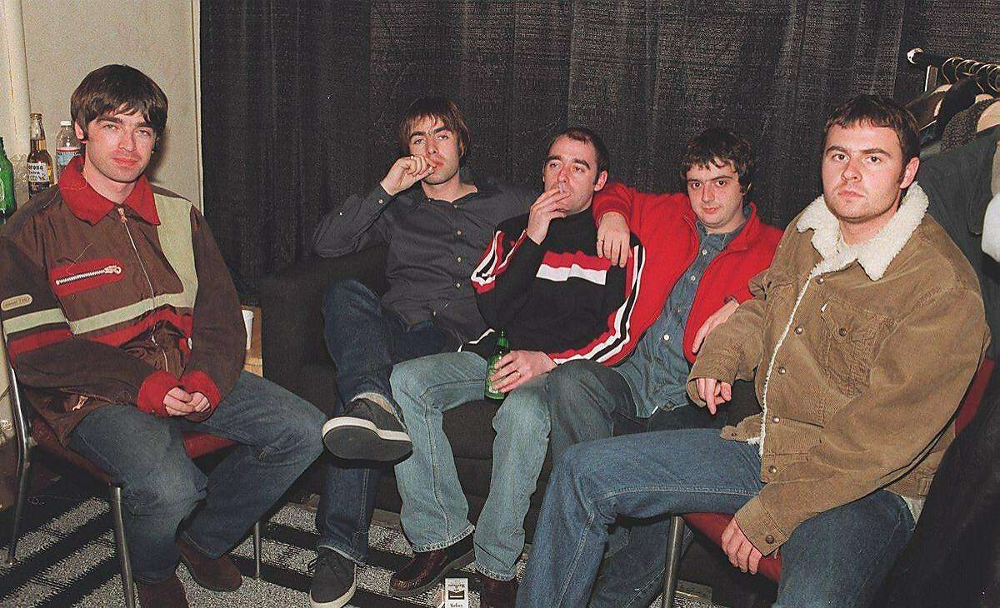
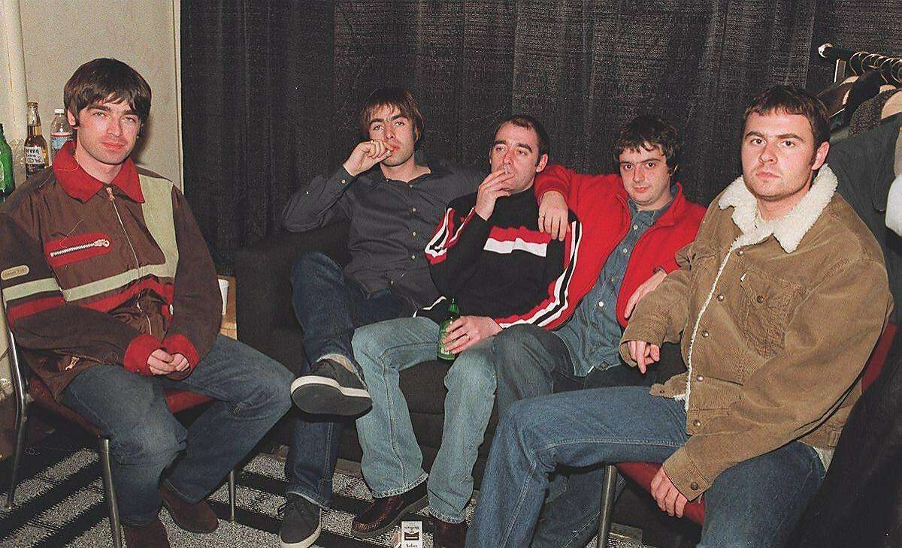
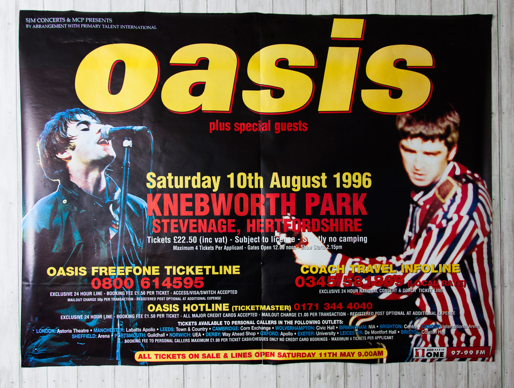
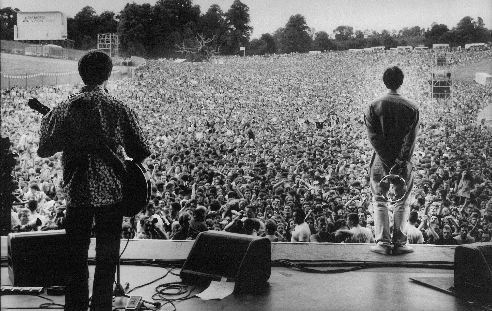
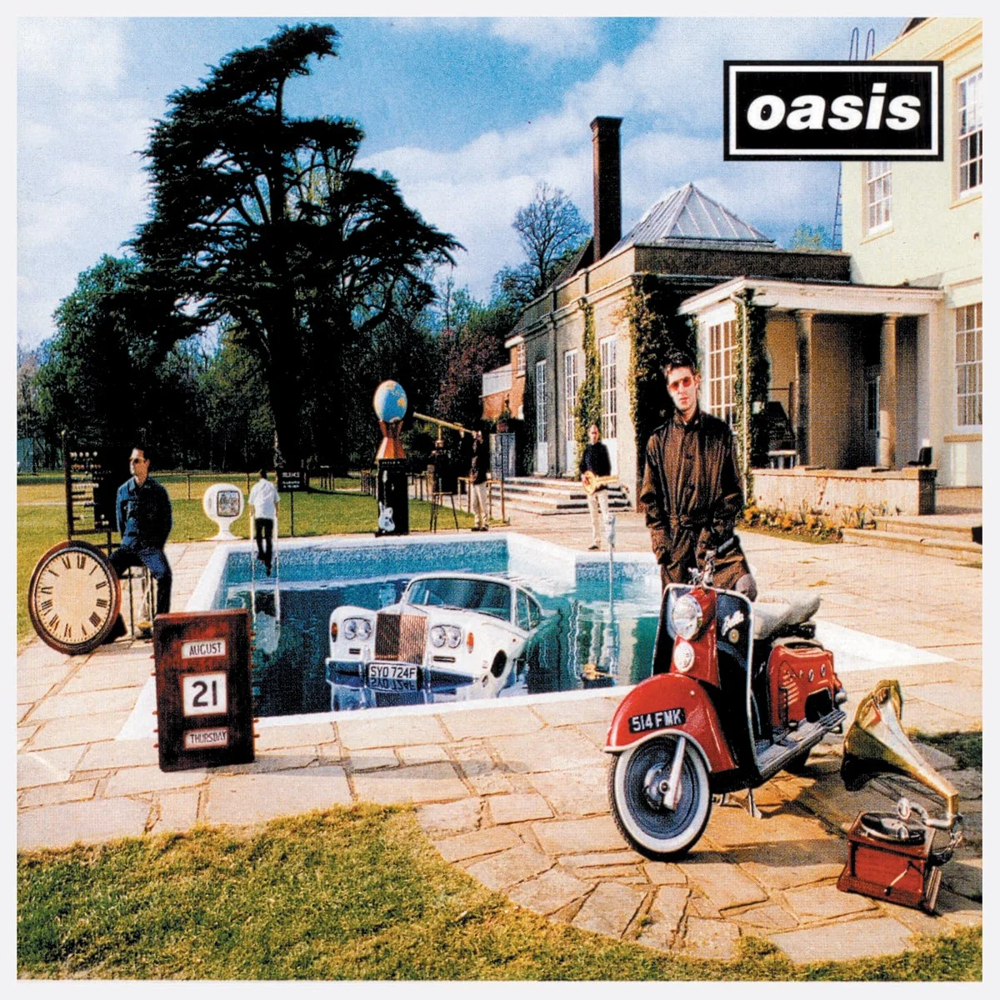
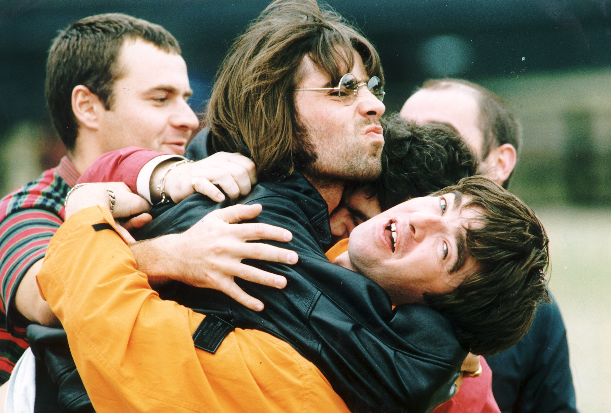

Biography
Oasis were formed in Manchester in 1991. They were originally called The Rain before Noel joined the band. Prior to Noel joining, the band consisted of: Liam Gallager: lead vocals, Paul Authurs: guitar, Paul McGuigan: bass, and Tony McCarroll: drums. Before joining Oasis, Noel was a roadie/technician for the band Inspiral Carpets. Upon returning home he discovered Liam had created a band with his friends. Noel immediately saw an opportunity to join the band and become the lead guitarist. He convinced Liam and the rest of the band that not only should he be the lead guitarist, but also the songwriter as well. He backed this up by arguing that he had years of experience as a roadie and that he could bring the band to greatness.
After Noel joined the band, they unanimously agreed to change their name to Oasis. The name came from a poster Noel saw while touring with the Inspiral Carpets. Noel would become the director of the band. Orchestrating the group's sound and lyrics. He decided on heavily distorted guitars playing mostly simple power chords mixed in with occasional barre chords. The sound would avoid any sort of complexity.
Oasis would then go on to produce their first demo tape in 1993. After the creation of their first demo tape, and with some official singles under their belt, they went around booking gigs trying to convince any venue to let them play. Their big break finally came in May of 1993 when Alan McGee spotted them during one of their gigs. Alan was with Creation Records and invited them to play a gig at King Tut's Wah Wah Hut club. After impressing Alan, he decided to sign Oasis to his studio, Creation Records.
 

Once signed with Creation Records Oasis released their first single Supersonic. It reached to 31 on the charts. Soon after the band released Shakermaker and Live Forever as their next set of singles. Live Forever would go on to break the top ten of the UK charts. This single, Live Forever, put them on the map. On August 29, 1994, Oasis' debut album was finally released, Definitely Maybe. The album would go on to be the fastest selling album in UK history at the time. The band would then go on to tour both Europe and North America to promote thier new album.
A year later in April of 1995 Oasis released a new single Some Might Say which charted at number one on the UK charts. Soon after Oasis kicked Tony McCarroll out of the band. This was not on McCarroll's terms at all and the Gallagher brothers pretty much decided to pull a Pete Best on Tony. Tony was eventually replaced by a new drummer, Alan White. Later that year Oasis released their sophomore album (What's the Story?) Morning Glory? This album would go on to be an even bigger success than its predecessor. It quickly sold over 4 million copies and would later go on to sell over 22 million, making it one of best selling albums of all time. With Morning Glory being such a huge success, Oasis was booked to headline the Knebworth House. They were scheduled for back to back shows and sold out on each one instantly. The concert had an audience of around 125,000 for each night. It is said that over 2.5 million people applied for tickets. At the time that would have equated to roughly 5% of the British population. For Oasis, this was when they hit peak popularity. After Knebworth, they would never be able to sell out such a large concert ever again.
Oasis would go back to the studio to record their third album Be Here Now. Just like the previous two albums Be Here Now sold very well. Becoming the fastest selling album of that year. Critics also were giving it gleaming reviews as well. Unfortunately for Oasis, the album's success wouldn't last for long. After fans finally started listening to the whole album, they quickly returned it. And soon after, public opinion on the album became negative. Dorrian Lynskey from The Guardian explains the timeline of events very well:
"For a little while, Be Here Now demanded superlatives. Its path was paved with five-star reviews, like petals thrown beneath a Roman emperor’s feet. No album in history has experienced such a swift and dramatic reversal of fortune. Be Here Now was reframed first as a disappointment and then as a disaster. It burned out quickly, falling well short of the sales achieved by 1995’s (What's the Story) Morning Glory?, with many copies ending up in secondhand racks. Noel himself quickly disowned it, dismissing it in the 2003 Britpop documentary Live Forever as “the sound of five men in the studio, on coke, not giving a fuck”.
For Oasis' popularity, it's all downhill from here. A couple years after Be Here Now's release, Pual Arthurs would leave the band. His reasoning was to spend more time with his family. And just two weeks after Arthurs' departure, Paul McGuigan would leave the band. Oasis was now without their guitarist and bassist. To make up for the lost members, Oasis would record their fourth studio album with Noel on guitar, Liam on bass, and Alan on drums. After recording was finished, the two brothers went off searching for new members to fill the void the two Paul's created. Their first new member was Colin Archer, who would become the guitarist for the band alongside Noel. For bass, they found Andy Bell, who actually didn't know how to play bass, only guitar. Since guitar and bass are pretty similar, it didn't take long for Andy to become proficient with the instrument. With their new lineup set, Oasis went on to release their fourth album Standing on the Shoulder of Giants, in early 2000. The album did okay, reaching 24 on the UK charts. Oasis then went on tour to celebrate the release of their new album and of the new millennium.
In between touring, Oasis would work on their 5th studio album Heathen Chemistry. The album would be released in 2002 and both public opinion and the press' opinion was that this album was much better than their previous one. Heathen Chemistry would go onto chart at number one in the UK and 23 in the US. After the release of the album, Alan White, the drummer for Oasis, decided to quit the band. Oasis was then tasked with finding a new drummer. They finally found their drummer when meeting Zak Starkey. He was the drummer for The Who and also the son of Ringo Starr. Zak was never an official member of the band and was mostly there to play the drums during tours.
Oasis would go to release two new albums between 2005 and 2008. Don't Believe the Truth and Dig Out Your Soul Both received stellar reviews and the band started to trend upwards in popularity. Unfortunately, this wouldn't last for long. During a 2009 tour in Paris, as Oasis were preparing to go on stage, Liam and Noel got into a fight. The fight got so bad that Liam started attacking Noel with his guitar. For Noel, this was the last straw. He abruptly left the backstage and quit the band. This would officially be the end for Oasis. Ever since this incident the brothers Liam and Noel haven't been on talking terms. Liam went on to create a new band called Beady Eye, which was pretty much Oasis, but without Noel. As for Noel, he embarked on the start of his solo career.
Sources: